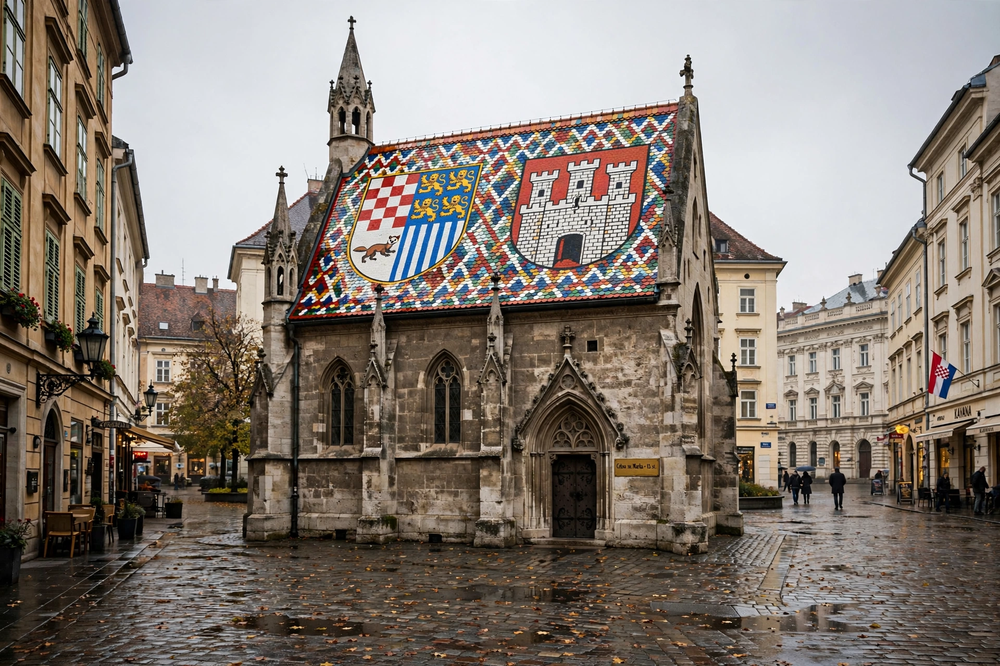

[Image placeholder: St Mark's Square and its tiled roof, Zagreb]| Country | Croatia |
|---|---|
| Population | About 770,000 (city); metro about 1.1 million |
| River | Sava |
| Parts | Upper Town (Gradec), Lower Town, Novi Zagreb across the river |
**Zagreb** is the capital and largest city of Croatia, on the slopes of Medvednica mountain and the northern bank of the Sava River. It grew from two medieval towns — the fortified, free royal city of Gradec and the church town of Kaptol, seat of the bishop — united in 1851. Their rivalry is commemorated by the Stone Gate and the Lotrščak Tower, whose cannon still fires at noon.
Under Austria-Hungary Zagreb (Agram) acquired its grand Lower Town of parks (the 'Green Horseshoe'), the National Theatre and the university. It was capital of Yugoslav Croatia, endured the 1991–95 war years at the edge of the front line, and in 2020 was struck by a damaging earthquake amid the COVID lockdown. Landmarks include the twin-spired Cathedral, St Mark's Square with its tiled coat-of-arms roof, the funicular (among the world's shortest), and the quirky Museum of Broken Relationships.
Zagreb is Croatia's political, economic and cultural centre, with a café culture rivalling Vienna's, Advent markets voted among Europe's best, and new development south of the Sava in Novi Zagreb.